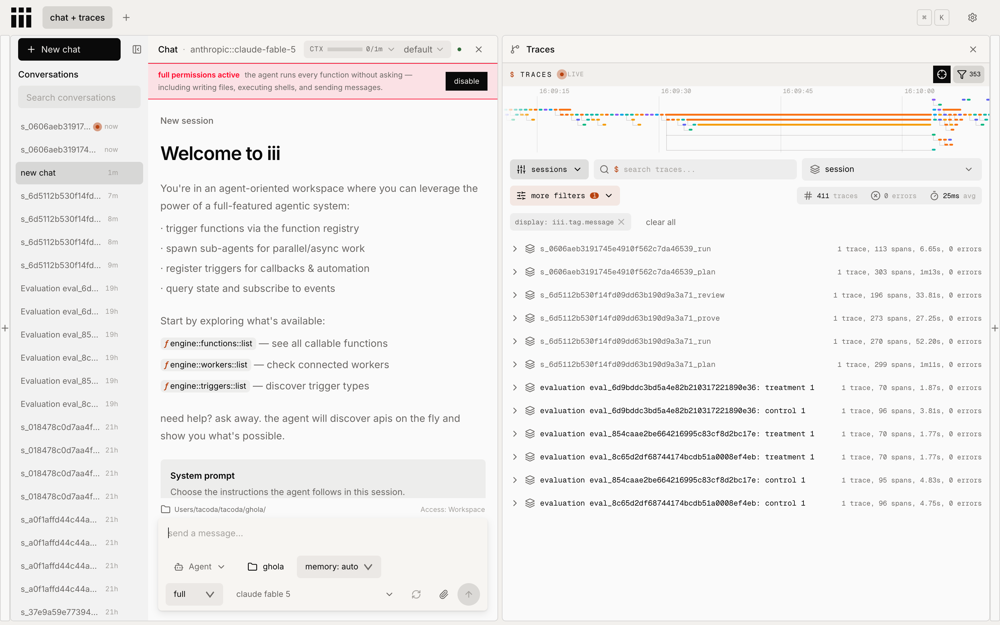
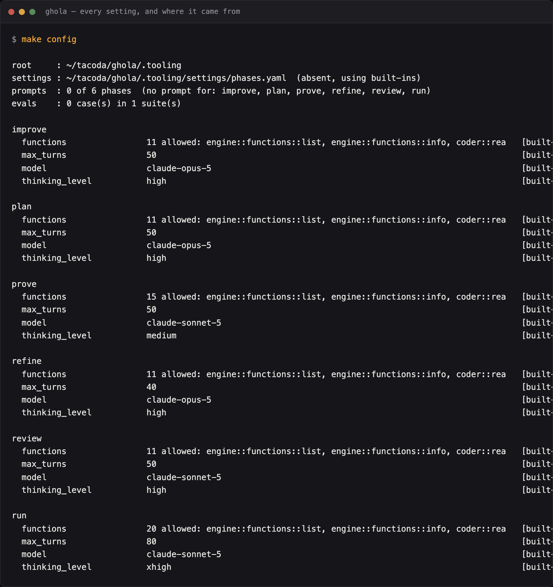
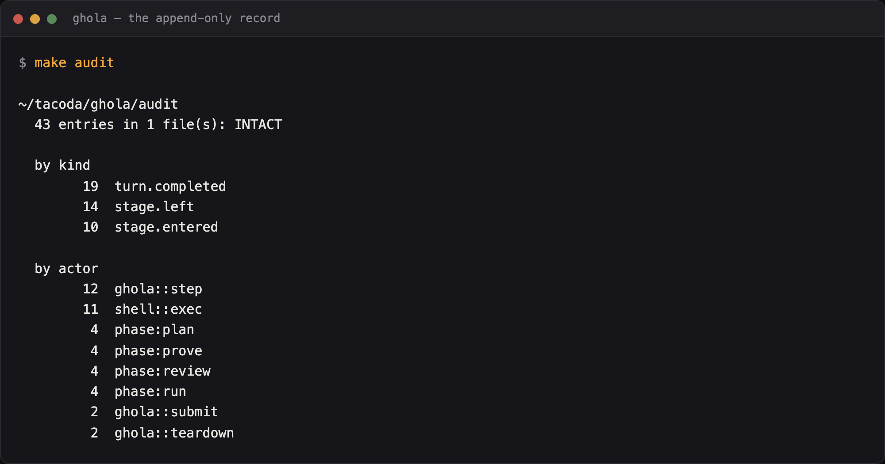

The walkthrough
This guide takes you from a fresh clone to a pull request, then shows you the three things you will want to change first. It assumes you have never used iii.
Read what ghola does not do alongside it. Every section here tells you what works, and that page tells you where the edges are.
The parts, before you install anything
Three things, and confusing them is the main way people get lost.
iii is the framework. An engine plus a set of workers. A worker is a running service that registers functions on a bus, and any worker can call any other worker's function. iii ships about 77 of them. ghola installs 31.
The harness is a worker. harness is iii's
agent loop: it takes a message, assembles context, calls a model, runs the
functions the model asks for, and repeats. ghola does not have a turn loop. It
starts turns on this one.
ghola is a starter kit. It picks which workers to run, on
which ports, and wires them together. Everything in this repository is yours to
edit once you clone it. The constraint ladder lives in its own worker,
ladder, because it is the one idea here that is useful without the
rest.
flowchart LR
you(["you"]) --> g
subgraph kit["ghola: conventions, and no tools of its own"]
g["the stage graph
the briefs
the ladder"]
end
subgraph iii["iii: the framework, about 77 functions"]
h["harness worker
the turn loop"]
w["worktree worker"]
gh["github worker"]
end
g --> h --> model(["a model"])
g --> w --> git(["git"])
g --> gh --> pr(["a pull request"])
classDef kitn fill:#3A2112,stroke:#E7C982,color:#E7C982
classDef iiin fill:#23150C,stroke:#6E2E13,color:#E7C982
classDef out fill:#1A100A,stroke:#A4470F,color:#E8A33D
class g kitn
class h,w,gh iiin
class you,model,git,pr out
Install
You need iii, uv, git,
gh and Python 3.11 or newer.
curl -fsSL https://install.iii.dev/iii/main/install.sh | sh
git clone tacoda_github:tacoda/ghola.git && cd ghola
make setup
make setup runs make doctor, creates the virtual
environment, installs the Python packages, and writes .env from
the example. Read what it prints.
Put your key in .env:
ANTHROPIC_API_KEY=sk-ant-...
The engine reads this file, not the workers. The provider
workers take their credentials from the engine's own environment. Start the
engine without the key and the router serves no models. Every turn then fails
at router::provider::resolve, and nothing says why.
make up sources .env for that reason.
Start it
make up
This starts the engine, waits for the harness worker to report ready, then starts ghola's policy worker. Expect about a minute the first time, because 31 workers start in sequence.
make status
engine : up policy : up port 3131: listening the HTTP surface port 3133: listening the iii console port 3132: listening the stream server port 49154: listening the worker manager
Open http://127.0.0.1:3133. That is the iii console. Best tool
here: every function, every trigger, queue depth, and a waterfall for each
turn.

The trace panel is the half to watch. A job appears there as one session per
phase, so ..._plan and ..._run are separate rows. The
span count beside each is every tool call that phase made.
These ports are not iii's stock ones, on purpose: a ghola engine has to run beside another iii project's engine.
To stop: make down. It waits for the ports to free. Reporting
one port free while another is still held is the same half-truth as reporting
one port down.
Your first turn
make turn PHASE=plan PROMPT="What does this repository do?"
Add WORKSPACE=../some-repo to point it at other code. Without
it, the turn works on ghola itself.
You will see the settings, then the model's answer and its cost:
phase plan
model claude-opus-5 thinking=high max_turns=50
workspace /Users/you/ghola
rung 1 11 function(s) granted
Read the rung 1 line. It counts the functions
this phase may call. A function absent from that list does not exist for this
turn, because the harness refuses it before ghola sees it. That is the first
rung of the ladder, and the framework enforces it rather than a rule ghola
checks. I lean on this more than on any rule I have written: a check handed no
editor needs no predicate telling it not to edit.
A turn edits the workspace as it is. make turn
mints no worktree, so a run phase writes to the files you are
looking at. A job does cut a worktree, which is the first job below.
If nothing comes back, ask the harness directly:
make call FN=approval::list-pending # a held call is the usual answer make call FN=harness::status JSON='{"session_id":"s_<id>_plan"}'
If a turn hangs, approval-gate is holding a
call. ghola ships config/approval-gate.yaml with
default_mode: full so the ladder does the refusing, but a session
created before that change keeps its own mode. Check what it is holding, then
release it:
make call FN=approval::resolve JSON='{"session_id":"...","function_call_id":"...","decision":"allow"}'
See what is configured
make config
root : /Users/you/ghola
settings : /Users/you/ghola/settings/phases.yaml (absent, using built-ins)
plan
functions 11 allowed: engine::functions::list, … [built-in]
max_turns 50 [built-in]
model claude-opus-5 [built-in]
thinking_level high [built-in]

That block is trimmed. The picture is the whole thing on a fresh clone: six
phases, and [built-in] against every value because
settings/ is still empty.
Every value carries where it came from. Configuration in ghola is
optional, which makes this command load-bearing rather than
convenient. Without it, a default is a magic number, and a
settings/phases.yaml with a YAML syntax error looks exactly like
agreeing with the built-ins. make config tells the two apart.
Your first job
The section above ran one turn. A job is the whole pipeline: plan, run, prove, review, commit, and a request for somebody to review.
stateDiagram-v2
direction TB
[*] --> plan : make submit
plan --> run
run --> prove
prove --> review
review --> commit
commit --> commit : the hook refused, so revise
commit --> request : the hook accepted
request --> [*] : you merged, so landed
request --> [*] : you set status closed
request --> run : you wrote a comment, so rework
note right of commit
every transition is a durable
queue message, so a crash
resumes rather than restarts
end note
note right of request
nothing merges itself,
in any configuration
end note
Name a repository
ghola works on a repository you name in repos.local.toml. Git
ignores that file. It beats the tracked repos.toml, which holds
the examples.
The shortest path uses a scratch repository and no forge at all. A
forge is whoever hosts your code and receives the pull
request: GitHub, GitLab, Gitea. The local forge is none of
them.
[repos."/Users/you/code/scratch"] forge = "local" base = "main"
That entry needs no account, no token, and no slug. Check it:
make repos
Submit a spec
make submit SPEC=specs/document-the-ports.md REPO=/Users/you/code/scratch make jobs
Watch it in the console at http://127.0.0.1:3133. Each stage
runs a turn or an action. Every transition travels as a durable queue message,
so a crash between stages resumes rather than restarts.
make pipeline prints the stage graph as it will actually run,
plus anything wrong with it. Read it before you submit. A broken stage found
two turns in has already cost you a worktree and a plan.
What comes out
The local forge writes the request into
.ghola/requests/ in your repository. It carries the spec, the
plan, what the run turn built, what the proof ran, and the review's verdict.
Each phase appended its own section as the job went, which is why the file
reads as an account rather than as a summary.
Then ghola stops. Nothing merges itself, in any configuration.
You have three answers:
- Merge the branch. ghola marks the job landed and releases the worktree.
- Set
status: closedin the request file. The job closes. - Write a comment under the marker at the bottom. ghola reworks the branch against your words and pushes a second commit.
The comment is the interesting one. It becomes the brief for the next turn, and it replaces the spec rather than joining it. Re-stating the original alongside a specific complaint is how a turn solves the wrong one.
Moving to GitHub
Change the entry and add a slug:
[repos."/Users/you/code/real-repo"] slug = "you/real-repo" base = "main"
forge = "github" is the default, so leave it out. Then run
make doctor. It asks the github worker which account
it is, because your shell and that worker routinely differ. That mismatch
surfaces at pr create, after a job has already paid for a
worktree, a plan, a run and two checks.
Everything above works the same. The request becomes a pull request. A comment on it becomes the same rework.
Change the three things you will want to change
A phase: which model, how long, what tools
Create settings/phases.yaml. Everything in it overrides a
built-in.
phases:
review:
thinking_level: high
max_turns: 30
Run make config PHASE=review. The two keys you set now read
[settings], and the rest still read [built-in]. The
file merges one level down, so setting one key keeps the rest of the phase.
functions is replaced, not merged. A phase
that lists its own functions gets those and not those plus the defaults. This
is deliberate. Rung 1 read as an accident of merge order is how a check ends
up holding an editor.
To add a phase that does not exist, name it:
phases:
threat-model:
model: claude-opus-5
functions:
allow:
- engine::functions::info
- coder::read-file
- coder::search
Then make turn PHASE=threat-model PROMPT="...".
The tools are not ghola's
Look at the function names above. coder::read-file and
shell::exec come from iii's shell worker.
github::pr::create comes from the github worker.
ghola registers no tools. To find what is available:
make call FN=engine::functions::list # everything on the bus make schema FN=coder::read-file # one function's contract
Grant any of them to a phase by name. This is why extension does not need ghola's permission: a function id is a function id, wherever it came from.
A script: when configuration is not enough
Configuration handles values. A judgment needs code, and code goes in a named directory where it is found by filename.
| Directory | Becomes | Arrives in |
|---|---|---|
| predicates/ | a rule's check | M3 |
| actions/ | a stage's action | M4 |
| guards/ | a stage's condition | M4 |
A predicate is one function with no ghola imports, so you can run it directly:
# predicates/no_secrets.py import re PATTERN = re.compile(r"(sk-ant-|BEGIN PRIVATE KEY)") def check(path: str, content: str, context: dict) -> list[dict]: """Return one finding per offending line, or an empty list.""" return [ {"line": n, "why": "a credential in source"} for n, line in enumerate(content.splitlines(), 1) if PATTERN.search(line) ]
There is no registration step and no import to add. If you would rather write it in another language, register it as a worker function and name its function id instead.
The ladder
This is the idea ghola adds to iii, and the reason the rest exists. It arrives at M3. Read it now, because it explains why the sections above are shaped this way.
There are two ladders, and you need both. A constraint withholds something and climbs away from the agent's reach. A capability grants something and climbs toward wider reach. They meet at the grant, which is why one worker serves both.
A constraint has a rung: the mechanism that carries it.
| Rung | What carries it | Can the agent get past it? |
|---|---|---|
| 0 | prose in a rules file | yes, by not reading it |
| 1 | the phase was never granted the function | no. There is nothing to refuse |
| 2 | the repository's own hook | yes. It can delete the hook |
| 3 | a callback in front of every call | no. It cannot reach the callback |
| 4 | the delivery gate, over the finished diff | no. It runs after the turn |
| 5 | CI, on the pull request | no. It runs outside the machine |
Each rung puts the rule further out of reach of the thing it constrains. The rung is one line of a rule's frontmatter:
---
id: no-secrets
description: A credential never reaches a commit
why: A leaked key costs a rotation and an incident review.
rung: [3, 4]
predicate: predicates/no_secrets.py
---
rung: [3, 4] is two boundaries, not two
strictnesses. A callback at rung 3 sees function calls, and a shell
command is one call whose contents it does not read. The delivery gate at rung
4 sees the finished diff. Neither sees what the other sees, so a rule that
matters names both.
The ladder guide is the whole of it, including the second ladder that capability climbs.
Let it read its own record
A factory that never learns anything is a factory you have to keep teaching. The improve lane reads what already happened and asks one turn what would have prevented it.
make improve REPO=../some-repo
The evidence is the audit log and the job records, so it is what happened rather than what anybody remembers:
- a refusal, and the rung that caught it
- a revision the commit gate forced
- a question the spec did not answer
- a check that came back
concerns - a rule that never fired
Trouble is read broadly. A job that reached a merged pull request still counts if it cost a revision on the way. A lane that looked only at outright failures would miss most of what is worth fixing.
If nothing cost anything, no turn runs at all. That is the lane working.
flowchart LR
subgraph ev["what happened, not what anybody remembers"]
a["the audit log"]
j["the job records"]
end
a --> t
j --> t
t{"did anything
cost something?"}
t -- "no" --> quiet["no turn runs.
Zero proposals is an answer"]
t -- "yes" --> turn["one improve turn"]
turn --> ch["charter lane
CLAUDE.md, rules, hooks"]
turn --> ha["harness lane
prompts, policy, budgets"]
turn --> fa["factory lane
stages, gates, ordering"]
ch --> spec["make accept writes specs/<title>.md"]
ha --> spec
fa --> spec
spec --> sub["you submit it, like any other work"]
classDef ev fill:#1A100A,stroke:#6E2E13,color:#E8A33D
classDef gate fill:#3A2112,stroke:#E7C982,color:#E7C982
classDef lane fill:#23150C,stroke:#3B2515,color:#E7C982
classDef quiet fill:#0F0A06,stroke:#3B2515,color:#AB9070
class a,j ev
class t gate
class ch,ha,fa lane
class quiet quiet

make audit is that evidence from the outside: how many entries
there are, whether the chain still verifies, and which actors wrote them. Run
it before make improve to see how much there is to read.
Where a proposal can go
| lane | what it is about | how often to expect one |
|---|---|---|
| charter | the target repo's CLAUDE.md, rules, hooks, skills | constantly |
| harness | prompts, tool policy, phases, budgets | rarer, usually an edge case |
| factory | stages, gates, guards, ordering | rarely. Process should be boring |
Proposals should thin out with distance from your own code. Most of what goes wrong is a thing the repository wanted and never said out loud. So a run that proposes three factory changes and no charter ones is usually telling you the lane was picked wrongly.
Reading and accepting
make proposals # every run, newest first make proposals RUN=abc123 # one run, whole, with the evidence it was given make accept RUN=abc123 N=0 # the first proposal becomes a spec
Nothing is applied. Accepting writes
specs/<title>.md and stops, and you submit it like any other
work:
make submit SPEC=specs/give-commits-md-a-scope.md REPO=../some-repo
The exception is promote or demote, which is one
number in a rule's file and goes to ladder::move. That changes a
file and commits nothing, so it still reaches you as a diff. The rule behind
all of this is narrow and load-bearing: the lane that proposes changes to your
charter may not edit your charter. Otherwise it would be the one thing here
that never passed through a pull request.
What it will not do
- Propose anything it cannot trace to a job or a signal. Those are dropped, and the run records what it dropped and why, so a quiet run is distinguishable from a run that found nothing.
- Fill a quiet week. Zero proposals is an answer.
- Argue from a silence that proves nothing. A rule carried at rung 0
refuses nothing by construction, so it can never appear to have fired however
well it is working. The lane reports it as
unobservable, and explicitly not as evidence for removing it.
Where to go next
make helplists every target.- PLAN.md is the phased plan: what is built, what is next, and what each milestone must prove before it counts as done.
- The iii console at
http://127.0.0.1:3133shows the machinery moving. - iii.dev/docs documents the framework underneath.
Troubleshooting
| What you see | What it is |
|---|---|
every turn fails at router::provider::resolve | the engine started without your key in scope. make down && make up |
registration token mismatch | a stale provider registration. iii worker restart provider-anthropic |
make turn never returns | ask harness::status for the session. A turn can fail while a listener waits |
| a port is taken | another iii project's engine. make status, and note ghola is off the stock ports |
| a rule seems not to fire | check the rung. Rung 0 enforces nothing by design |
a turn sits at awaiting_functions forever | approval-gate is holding a call. iii trigger approval::list-pending, then approval::resolve, or set the session to full |
| the held call names a path outside the workspace | the turn reached past its filesystem scope and the approval hook parked it. A second root is harness::filesystem::grant, and the improve lane asks for one before it starts |
registration token mismatch after restarting one worker | the router and the provider disagree. Restart the whole engine (make down && make up), not one worker |
make config says a file is absent that you wrote | check the path. settings/, not config/, which belongs to iii |